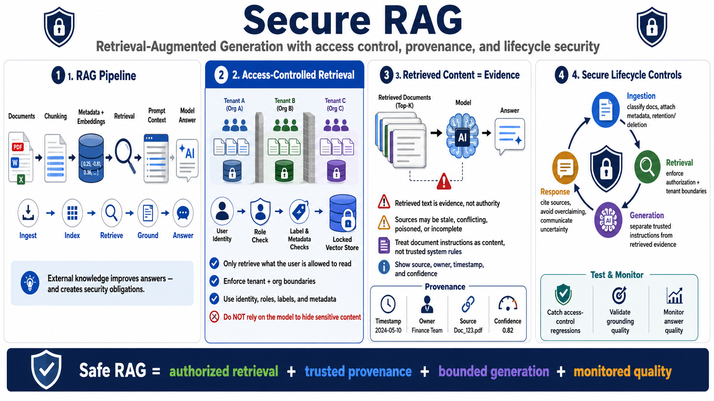

RAG, Retrieval, and Document Safety
Connecting to LMS... Progress: in progress

Narration
Retrieval augmented generation, or RAG, adds external knowledge to model context. A typical pipeline ingests documents, chunks them, indexes them with metadata, stores embeddings or searchable representations, retrieves relevant content, and places selected passages into the prompt. This can make answers more useful and current, but it also creates a security obligation. The application must preserve authorization, provenance, and data boundaries from ingestion through answer generation.
Access-controlled retrieval is essential. If a user is not allowed to read a document directly, the AI application should not expose the same content through retrieval. Tenant separation, organization boundaries, role checks, document labels, source metadata, and user identity must be part of the retrieval decision. It is not enough to build one large vector store and trust the model to avoid disclosing inappropriate content. Retrieval should return only evidence the current user is allowed to use.
Retrieved content is evidence, not authority. Documents may be stale, conflicting, poisoned, misleading, incomplete, or written for a different audience. Some documents may contain instructions that look like commands to the model, but the application should treat them as content from a source, not as configuration. Source attribution, timestamps, document ownership, and confidence signals help users understand what an answer is based on and where uncertainty remains.
Safe RAG systems validate the whole lifecycle. Ingestion should classify documents, attach metadata, and respect deletion or retention requirements. Retrieval should enforce authorization and tenant boundaries. Generation should distinguish retrieved evidence from trusted instructions. Responses should include citations or source references when useful, avoid overclaiming, and communicate uncertainty. When retrieval changes, tests and monitoring should catch regressions in access control, grounding, and answer quality.